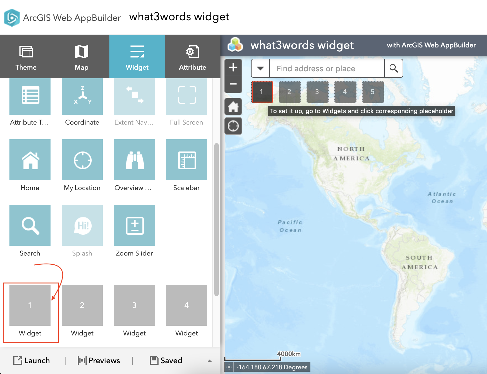

After you have created your own web application, you can now add the what3words widget to it by clicking on any of the empty widget on the left-hand side.
A list of widgets will pop up. You can search the what3words widget by typing its name on
the search bar at the top or look for the widget on the list. Once you have found it, please click on
it. If the widget has been selected correctly, a tick will be shown on top of the icon of the widget.

Configure the widget with your what3words Locator URL. By using the what3words locator, you
would be able to retrieve the correct what3words address in any coordinate systems used on your web map.
Example of a what3words Locator:
https://utility.arcgis.com/usrsvcs/servers/<MyGeocodingArcGISUniqueID>/rest/services/what3words_EN_English/GeocodeServer.
You can also add a zoom level to choose how close or far you want to dispaly your what3words address.

To find the what3words Locator URL, go to your ArcGIS Online or Portal for ArcGIS, click on the
Content > My Organization tab. Search for your locator, you could filter by Item
type > Tools > Locators as shown on this screenshot:

Then click on your Locator, scroll down to the bottom of the page, on the right-hand side, you will find the URL of your Locator. You need to copy and paste this URL to the configuration page of the what3words widget, as shown on this screenshot.:

The widget is now ready to run inside your web app. Click on the /// button to activate the
widget. A message will appear on the map: Click any location on the map to see its whats3words
address.

Clicking on the map will allow you to discover what3words addresses at the clicked location. For example,
the point selected on the map returned this what3words address: ///filled.count.soap.